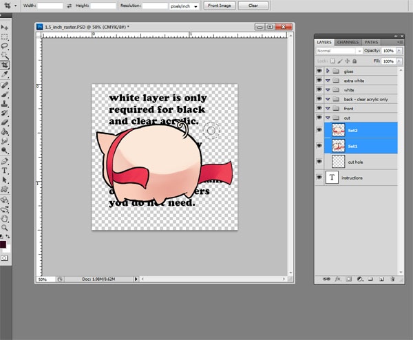

| Quantity | Max # of designs |
|---|---|
| 50 | 3 |
| 100 | 6 |
| 500 | 30 |
These quantities and number of designs only represent the price breaks we offer. You can order a higher quantity of charms during checkout and you will receive the corresponding increase in designs.
Example: If you want to order 300 charms, just choose the 100 charm option then "Add to Bag" and checkout. Within the checkout window you can increase the amount to 3 (3 x 100 = 300) and then checkout normally. You will then be allowed to have a maximum of 18 designs (3 x 6 = 18).
We will divide the amount you order with the designs you have as evenly as possible.
Example: If you ordered 50 and you have 2 designs, you will get 25 pieces for each design. If you ordered 50 and you have 3 designs, you will get 16 pieces for one design and 17 pieces each for the other two designs.
If your design is different on the front and back, you will need to add extra white upgrade.
Gloss and White upgrade must match the number of charms you order.
Our current turn is listed here. If you require a rush order, check out our FAQ.
Our sample pack includes clear acrylic charms with different gloss upgrades and extra white upgrade for you to compare. It also has a white acrylic sample charm.
The sample pack is free with a $5 shipping and handling fee, and limited to 1 sample pack per household.

Download the template from our templates section. Open the template in photoshop, you'll see that it has many premade groups and layers. Depending on the type of charm and upgrades you selected, some of the groups will not apply to you. For wood and white acrylic, you will not be using the back group, you can go ahead and delete that group at this time. If you ordered wood charm or clear acrylic without gloss upgrade, you can delete the gloss group right now as well.
Open the file with your artwork on it. If it has both front and back, make sure you select both layers. With the move tool selected, drag the image(s) onto the template.
You'll now have your artwork in the template. Adjust the size to make sure it fits in the template if it's too big or small. For clear acrylic with double side: make sure you have both layers selected when you adjust the size to keep the layers lined up. Next you can drag the layers into the corresponding group. For a basic cut hole setup, move the cut hole to the desired spot. The solid line is where it will be cut. The dashed line will give you an idea how much space to leave between the cutline and the cut hole. For more advanced cuthole setup tips, check the FAQs.
Right click your image in the layers > select pixel. Make a new layer in the white group, and fill the selection with black. Whatever is filled with black on this layer will be printed as white. If you'd like a translucent effect on some part of the charm, you can leave that part blank. I have filled the whole image with black because I want a complete white layer between my front and back image. If you are interested in translucent effect, please check the FAQs.
White acrylic will have hi-gloss as a default, you will need to do this step if printing white acrylic charms. Make a new layer in the gloss group and fill it with black. Same as the last step, the black area will be printed with gloss. If you want spot gloss effect then only put black on the area you want the gloss.
Special note for acrylic charms:
Remember when printing on clear acrylic, the front image will come out flipped when printed. So please make sure your image is facing the right way. (The back image will print like your see on the monitor) In the picture above, I wanted the letters to print correctly, so I flipped the canvas horizontally. This way when the charm is printed, the letters will be in the right orientation. If your front and back image is different, you will need to have extra white upgrade. During set up, make sure your front and back layers are perfectly lined up. You can check this by lowering the opacity on the back layer. (Don't forget to return the opacity back to 100% after you finished checking your images!)
Now that you have all the layers set up, you will need to make a cutline. For a basic outline:
Don't worry about the selection not conforming to the cuthole, we'll take care of that.
Once you are done with these steps, you should have something that looks like the image below. Right click on the selection > Make work path (Make sure you have the Rectangular Marquee Tool or the Lasso Tool selected.) For more advanced cutline tips, check the FAQs
Click on the path tab, double click on the work path you just made and rename it "cut". Save the file and name it with the format: Order#_TotalQuantityOrdered_Type_Size_Design.psd (Order# provided in the confirmation email) - For example: Order45_Q500_Wood_1Point5Inch_1of25.psd
At this point you are all done! Follow the link on your confirmation email and upload the file. Give your self a pat on the back and let us do the rest!
By using our service and submitting your order to Chillypig Creations, you agree to the following:
Chillypig Creations disclaims no oral or written or implied warranty. We strive to provide the best quality product we can offer to our customers. Reasonable care must be taken to prevent acrylic from scratching/breaking. Wood products need to be kept away from moisture/excessive heat. We do not control how the end user will market/utilize the product.
Chillypig Creations reserve the right to refuse service to anyone, at anytime, for any reason.
For acrylic charms, no. We require the cutline have at least a 20 pixel (Approximately 0.05") offset from your design. The reason for this requirement is because our charms are directly printed on acrylic and laser cut into the shape that you designed. As a result, the melting acrylic can potentially warp and/or weaken the printed area. So if you send us a file with a cutline of less than 20 pixels we will let you know and ask you to fix the file.
For wood charms, there is no minimum for the cutline. However, you will have to provide at least 16 pixels (Approximately 0.04") for bleed in your design.
Yes! You can modify the cutlines to anything you want as long as you retain at least 20 pixels border to the print area and keep it within the canvas size.
Yes! As long as the cutline within the charm has at least a 20 pixel border with the printed image. Also, you have to consider the shape of what you are cutting out and that the acrylic is being cut out by a laser so it will melt and not produce a clean cut if you are trying to cut out tiny strips (basically anything less than 20 pixels). In general, if you want to cut little parts out of the charm it does not look very good, but you can definitely incorporate larger holes that compliment your design and create really cool effects.
For example, if you make a donut charm you can cut out the donut hole in the middle as long as the hole is bigger than 20 pixels AND the cut is 20 pixels away from the printed donut. So the end product would be a printed donut on a donut shaped acrylic.
You can expand the dashed line so that the cuthole will be deeper in the charm, but keep in mind that you will have to thread the charm so depending on the ring you plan on using it might be extremely difficult or impossible to thread. You cannot shrink the dashed line since it will make the cuthole too thin making the charm prone to shattering. Do not change the solid circle.
Yes, you can have a maximum of 2 cutholes. Just duplicate the cuthole layer provided in the template and place the two cutholes where you want it to be. If you want more than two cutholes, there is an additional fee and you will need to contact us.
The translucent effect can only work on clear acrylic charms if you leave out the white portion so that light passes through. The effect is similar to a stained glass look and works since the color inks are not completely opaque. However, in general darker, more saturated colors will come out looking better for this effect. For example, light yellow will barely show up while a darker, saturated blue can be clearly seen.
For every color EXCEPT white, yes. Since printing white is entirely dependent on filling in the white layer, if you leave white in any translucent effect it will come out transparent instead.
Yes, but you have to fill in that specific portion of white you want to be translucent with a lower opacity black in the white layer. Please let us know that this is an intended effect when you submit your order.
Here's a photo for you to compare wood charms printed with white and without:
The extra white upgrade is only for clear acrylic charms. In general you would always want extra white if your front and back images are different. The reason is that the white ink is not 100% opaque and the color ink is translucent. As a result, a thick white layer in the middle of the front and back side acts as a divider minimizing how much you can see the back side of the charm from the front and vice versa.
However, even when the images are the same, you might consider using extra white if you want to minimize color variations. The issue is that with one layer of white, more light can pass through the charm so the colors seem more saturated since you can see through more to the identical back side from the front thus adding extra color to the same spots producing a darker effect. This issue will also produce greater inconsistancies between prints (i.e. printing the same image today then a month from now) since it will amplify any differences in printing caused by the environment (temperature, humidity, etc) and the amount of white ink left in the printer (which affects the opacity of the white ink). Unfortunately, these variations are part of the limitations of printing, but they can be mostly mitigated with the extra white upgrade. That being said, the color inconsistencies are not very apparent. Practically, you can only tell if you closely analyze the charms side by side or if you have stared at the original image for hours on end (i.e. the artist).
Matte Gloss has a shimmering look with a slightly textured feeling which is resistant to fingerprints. High Gloss has a thicker coating that gives a smoother, shiny look.
It is extremely hard to tell the difference in pictures, but you can always order a sample pack which contains :
Only for our clients based in California. Unfortunately, we are required to collect sales tax for California based clients.
However, if you plan to resell our charms you can acquire a resale certificate then we do not have to collect sales tax for the order from you. You just need to have an active seller's permit during the purchase of the charms and meet a few basic criteria. Follow these links for more information:
Once you have verified that you qualify and filled out a form, email us a copy of your completed form and we can invoice you without the sales tax. Do not just order from the store if you plan on using your resale certificate!
We ship with USPS priority mail. For deliveries within the USA, it takes approximately 2-3 business days. For international deliveries, it takes approximately 6-10 business days.
$10 flat rate within the USA. For International orders, it depends on the location and size of the order. You can see the price during checkout.
If you need your charms before our current turn around time, contact us for rush orders. In general, the rush timeline is:
Please do not hesitate to contact us about our rush availabilty and actual timeline so we can work something out together!
You will have to contact us to see if we have enough stock to fill the order at the time. Also, please note that any special order charms are only available with Matte Gloss.
If you have a question that you cannot find the answer to in the FAQ and Resources sections, feel free to contact us.